Last updated: 2024-06-26
Checks: 6 1
Knit directory: phasing_clean/
This reproducible R Markdown analysis was created with workflowr (version 1.7.1). The Checks tab describes the reproducibility checks that were applied when the results were created. The Past versions tab lists the development history.
Great! Since the R Markdown file has been committed to the Git repository, you know the exact version of the code that produced these results.
Great job! The global environment was empty. Objects defined in the global environment can affect the analysis in your R Markdown file in unknown ways. For reproduciblity it’s best to always run the code in an empty environment.
The command set.seed(20240501) was run prior to running
the code in the R Markdown file. Setting a seed ensures that any results
that rely on randomness, e.g. subsampling or permutations, are
reproducible.
Great job! Recording the operating system, R version, and package versions is critical for reproducibility.
Nice! There were no cached chunks for this analysis, so you can be confident that you successfully produced the results during this run.
Using absolute paths to the files within your workflowr project makes it difficult for you and others to run your code on a different machine. Change the absolute path(s) below to the suggested relative path(s) to make your code more reproducible.
| absolute | relative |
|---|---|
| /net/snowwhite/home/beckandy/research/phasing_clean/output/switch_errors/mb_error_rate/ | output/switch_errors/mb_error_rate |
| /net/snowwhite/home/beckandy/research/phasing_clean/output/trio_phase_15/mb_error_rate/ | output/trio_phase_15/mb_error_rate |
| /net/snowwhite/home/beckandy/research/phasing_clean/output/trio_phase_22/mb_error_rate/ | output/trio_phase_22/mb_error_rate |
Great! You are using Git for version control. Tracking code development and connecting the code version to the results is critical for reproducibility.
The results in this page were generated with repository version 653a35b. See the Past versions tab to see a history of the changes made to the R Markdown and HTML files.
Note that you need to be careful to ensure that all relevant files for
the analysis have been committed to Git prior to generating the results
(you can use wflow_publish or
wflow_git_commit). workflowr only checks the R Markdown
file, but you know if there are other scripts or data files that it
depends on. Below is the status of the Git repository when the results
were generated:
Ignored files:
Ignored: .Rhistory
Ignored: .Rproj.user/
Ignored: .ipynb_checkpoints/
Ignored: chr1_10k.bed
Ignored: chr22_10k.bed
Ignored: data/1kgp/chr1/
Ignored: data/1kgp/chr10_pilot_mask.bed
Ignored: data/1kgp/chr15/
Ignored: data/1kgp/chr15_recomb.bed
Ignored: data/1kgp/chr1_recomb.bed
Ignored: data/1kgp/chr22/
Ignored: data/1kgp/chr22_recomb.bed
Ignored: data/1kgp/chr8/
Ignored: data/1kgp/chr8_recomb.bed
Ignored: data/1kgp/chrX.vcf.gz
Ignored: data/1kgp/chrX.vcf.gz.tbi
Ignored: data/1kgp/chrX_2504_snps_noPAR.bcf
Ignored: data/1kgp/chrX_2504_snps_noPAR_noSing.bcf
Ignored: data/1kgp/chrX_freq.tsv
Ignored: data/1kgp/chrX_maf.tsv
Ignored: data/1kgp/chrX_pilot_mask.bed
Ignored: data/1kgp/chrX_recomb.bed
Ignored: data/1kgp/exclude_samples/
Ignored: data/chr1.1kb.sorted.bed
Ignored: data/chr1.fasta
Ignored: data/chr1.sizes
Ignored: data/chr10.sizes
Ignored: data/chr15.1kb.sorted.bed
Ignored: data/chr15.fasta
Ignored: data/chr15.sizes
Ignored: data/chr15_gc1kb_pilot.bed
Ignored: data/chr15_mask.fasta
Ignored: data/chr15_mask.fasta.fai
Ignored: data/chr1_gc1kb_pilot.bed
Ignored: data/chr1_mask.fasta
Ignored: data/chr1_mask.fasta.fai
Ignored: data/chr22.1kb.sorted.bed
Ignored: data/chr22.fasta
Ignored: data/chr22.sizes
Ignored: data/chr22_gc1kb_pilot.bed
Ignored: data/chr22_mask.fasta
Ignored: data/chr22_mask.fasta.fai
Ignored: data/chr8.1kb.sorted.bed
Ignored: data/chr8.fasta
Ignored: data/chr8.sizes
Ignored: data/chr8_gc1kb_pilot.bed
Ignored: data/chr8_mask.fasta
Ignored: data/chr8_mask.fasta.fai
Ignored: data/chrX.1kb.sorted.bed
Ignored: data/chrX.fasta
Ignored: data/chrX.fasta.fai
Ignored: data/chrX.sizes
Ignored: data/chrX_gc1kb_pilot.bed
Ignored: data/chrX_mask.fasta
Ignored: data/chrX_mask.fasta.fai
Ignored: data/decode/
Ignored: data/hg38.chrom.sizes
Ignored: data/mask_pilot_15_fasta.bed
Ignored: data/mask_pilot_1_fasta.bed
Ignored: data/mask_pilot_22_fasta.bed
Ignored: data/mask_pilot_8_fasta.bed
Ignored: data/mask_pilot_X_fasta.bed
Ignored: data/ref_GRCh38.fna
Ignored: data/ref_GRCh38.fna.fai
Ignored: data/ref_GRCh38.fna.in
Ignored: data/ref_maps/
Ignored: output/switch_errors/
Ignored: output/trio_phase_1/
Ignored: output/trio_phase_15/
Ignored: output/trio_phase_22/
Ignored: output/trio_phase_8/
Ignored: output/vote_15/
Ignored: output/vote_22/
Ignored: output/vote_x/
Ignored: scratch/
Untracked files:
Untracked: code/batch_annotate_switch_vote.sh
Untracked: code/batch_compare_noTH.sh
Untracked: code/batch_vote_phase.sh
Untracked: code/batch_vote_phase_trio.sh
Untracked: code/vote_phase.R
Untracked: code/vote_phase_trio.R
Untracked: code/vote_summary.R
Unstaged changes:
Modified: README.md
Modified: _config.yaml
Note that any generated files, e.g. HTML, png, CSS, etc., are not included in this status report because it is ok for generated content to have uncommitted changes.
These are the previous versions of the repository in which changes were
made to the R Markdown (analysis/recombination_rate.Rmd)
and HTML (docs/recombination_rate.html) files. If you’ve
configured a remote Git repository (see ?wflow_git_remote),
click on the hyperlinks in the table below to view the files as they
were in that past version.
| File | Version | Author | Date | Message |
|---|---|---|---|---|
| Rmd | 653a35b | Andy Beck | 2024-06-26 | wflow_publish(c("analysis/recombination_rate.Rmd", "analysis/trio_phasing_results.Rmd")) |
library(tidyverse)── Attaching core tidyverse packages ──────────────────────── tidyverse 2.0.0 ──
✔ dplyr 1.1.4 ✔ readr 2.1.5
✔ forcats 1.0.0 ✔ stringr 1.5.1
✔ ggplot2 3.5.0 ✔ tibble 3.2.1
✔ lubridate 1.9.3 ✔ tidyr 1.3.1
✔ purrr 1.0.2
── Conflicts ────────────────────────────────────────── tidyverse_conflicts() ──
✖ purrr::%||%() masks base::%||%()
✖ dplyr::filter() masks stats::filter()
✖ dplyr::lag() masks stats::lag()
ℹ Use the conflicted package (<http://conflicted.r-lib.org/>) to force all conflicts to become errorslibrary(data.table)
Attaching package: 'data.table'
The following objects are masked from 'package:lubridate':
hour, isoweek, mday, minute, month, quarter, second, wday, week,
yday, year
The following objects are masked from 'package:dplyr':
between, first, last
The following object is masked from 'package:purrr':
transposelibrary(gridExtra)
Attaching package: 'gridExtra'
The following object is masked from 'package:dplyr':
combinecbPalette <- c("#999999", "#E69F00", "#56B4E9", "#009E73", "#F0E442", "#0072B2", "#D55E00", "#CC79A7")
sd_het_dir <- "output/switch_errors/het_loc/annotated/"
trio22_het_dir <- "output/trio_phase_22/het_loc/annotated/"
trio15_het_dir <- "output/trio_phase_15/het_loc/annotated/"
df_rr_x <- read_tsv("data/decode/chrX_recomb.bed", col_names = c("chrom", "start", "end", "cM_MB"))Rows: 23976 Columns: 4
── Column specification ────────────────────────────────────────────────────────
Delimiter: "\t"
chr (1): chrom
dbl (3): start, end, cM_MB
ℹ Use `spec()` to retrieve the full column specification for this data.
ℹ Specify the column types or set `show_col_types = FALSE` to quiet this message.df_rr_15 <- read_tsv("data/decode/chr15_recomb.bed", col_names = c("chrom", "start", "end", "cM_MB")) Rows: 35539 Columns: 4
── Column specification ────────────────────────────────────────────────────────
Delimiter: "\t"
chr (1): chrom
dbl (3): start, end, cM_MB
ℹ Use `spec()` to retrieve the full column specification for this data.
ℹ Specify the column types or set `show_col_types = FALSE` to quiet this message.df_rr_22 <- read_tsv("data/decode/chr22_recomb.bed", col_names = c("chrom", "start", "end", "cM_MB"))Rows: 18700 Columns: 4
── Column specification ────────────────────────────────────────────────────────
Delimiter: "\t"
chr (1): chrom
dbl (3): start, end, cM_MB
ℹ Use `spec()` to retrieve the full column specification for this data.
ℹ Specify the column types or set `show_col_types = FALSE` to quiet this message.df_rr_8 <- read_tsv("data/decode/chr8_recomb.bed", col_names = c("chrom", "start", "end", "cM_MB"))Rows: 56932 Columns: 4
── Column specification ────────────────────────────────────────────────────────
Delimiter: "\t"
chr (1): chrom
dbl (3): start, end, cM_MB
ℹ Use `spec()` to retrieve the full column specification for this data.
ℹ Specify the column types or set `show_col_types = FALSE` to quiet this message.df_rr_1kgp_x <- read_tsv("data/1kgp/chrX_recomb.bed", col_names = c("chrom", "start", "end", "cM_MB"))Rows: 86701 Columns: 4
── Column specification ────────────────────────────────────────────────────────
Delimiter: "\t"
chr (1): chrom
dbl (3): start, end, cM_MB
ℹ Use `spec()` to retrieve the full column specification for this data.
ℹ Specify the column types or set `show_col_types = FALSE` to quiet this message.df_rr_1kgp_15 <- read_tsv("data/1kgp/chr15_recomb.bed", col_names = c("chrom", "start", "end", "cM_MB")) Rows: 85585 Columns: 4
── Column specification ────────────────────────────────────────────────────────
Delimiter: "\t"
chr (1): chrom
dbl (3): start, end, cM_MB
ℹ Use `spec()` to retrieve the full column specification for this data.
ℹ Specify the column types or set `show_col_types = FALSE` to quiet this message.df_rr_1kgp_22 <- read_tsv("data/1kgp/chr22_recomb.bed", col_names = c("chrom", "start", "end", "cM_MB"))Rows: 40596 Columns: 4
── Column specification ────────────────────────────────────────────────────────
Delimiter: "\t"
chr (1): chrom
dbl (3): start, end, cM_MB
ℹ Use `spec()` to retrieve the full column specification for this data.
ℹ Specify the column types or set `show_col_types = FALSE` to quiet this message.df_rr_1kgp_8 <- read_tsv("data/1kgp/chr8_recomb.bed", col_names = c("chrom", "start", "end", "cM_MB"))Rows: 176192 Columns: 4
── Column specification ────────────────────────────────────────────────────────
Delimiter: "\t"
chr (1): chrom
dbl (3): start, end, cM_MB
ℹ Use `spec()` to retrieve the full column specification for this data.
ℹ Specify the column types or set `show_col_types = FALSE` to quiet this message.Additional information on the trio probands:
df_subj <- read_csv("data/1kgp/subject_info.csv")Rows: 3202 Columns: 6
── Column specification ────────────────────────────────────────────────────────
Delimiter: ","
chr (5): SAMPLE_NAME, POPULATION, SUPER, fatherID, motherID
dbl (1): sex
ℹ Use `spec()` to retrieve the full column specification for this data.
ℹ Specify the column types or set `show_col_types = FALSE` to quiet this message.ped_df <- read_table("data/1kgp/1kGP.3202_samples.pedigree_info.txt")
── Column specification ────────────────────────────────────────────────────────
cols(
sampleID = col_character(),
fatherID = col_character(),
motherID = col_character(),
sex = col_double()
)child_ids <- ped_df %>% filter(fatherID != "0" & motherID != "0") %>% pull(sampleID)
unrel_ids <- scan("data/1kgp/unrelated_subjects.txt", what = character())
df_subj_rel <- df_subj %>%
filter(SAMPLE_NAME %in% child_ids)
df_subj_rel$id2 <- 1:602Here in this document we will evaluate the relationship between recombination rate and switch/flip error rates.
load_het_pos <- function(res_dir, id){
f_name <- paste0(res_dir, "errors_", id, ".csv")
df <- read_csv(f_name)
return(df)
}
df_het <- load_het_pos(sd_het_dir, 1)Rows: 62449 Columns: 13
── Column specification ────────────────────────────────────────────────────────
Delimiter: ","
chr (2): gt, motif
dbl (11): pos, cpg, beagle_switch, eagle_switch, shapeit_switch, beagle_flip...
ℹ Use `spec()` to retrieve the full column specification for this data.
ℹ Specify the column types or set `show_col_types = FALSE` to quiet this message.# option 1: interval join
df_het <- setDT(df_het)[setDT(df_rr_x),
on = .(pos >= start, pos < end),
cM_MB := cM_MB][] %>%
setDF()
df_het %>%
filter(is.na(cM_MB)) %>%
pull(shapeit_switch) %>%
sum()[1] 0# option 2: closest end position
df_het <- load_het_pos(sd_het_dir, 1)Rows: 62449 Columns: 13
── Column specification ────────────────────────────────────────────────────────
Delimiter: ","
chr (2): gt, motif
dbl (11): pos, cpg, beagle_switch, eagle_switch, shapeit_switch, beagle_flip...
ℹ Use `spec()` to retrieve the full column specification for this data.
ℹ Specify the column types or set `show_col_types = FALSE` to quiet this message.df_het <- left_join(df_het, df_rr_x, by = join_by(closest(pos <= end)))
df_het$cM_MB %>% summary() Min. 1st Qu. Median Mean 3rd Qu. Max. NA's
0.000 0.000 0.020 2.100 0.212 21333.100 396 df_het %>%
filter(is.na(cM_MB)) %>%
pull(eagle_flip) %>%
sum()[1] 0If we roll with the closest end position approach, here is what the background distribution of cM_MB values at heterozygous positions looks like:
df_het %>%
filter(!is.na(cM_MB)) %>%
ggplot(aes(x = cM_MB)) +
geom_boxplot()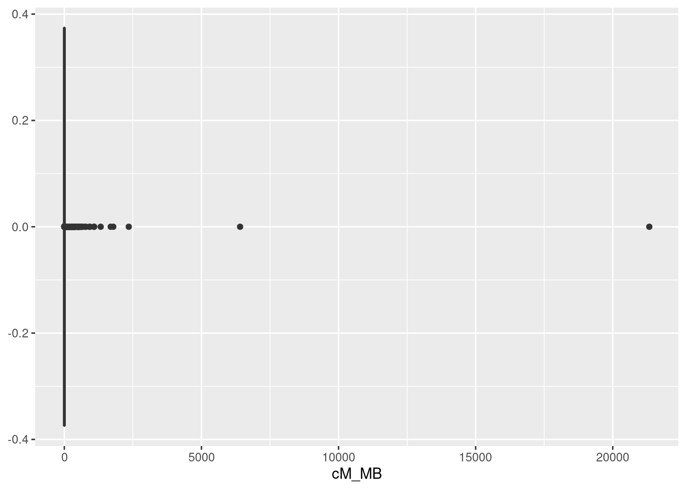
Welp, hard to see anything; let’s look at flips:
df_het %>%
filter(!is.na(cM_MB)) %>%
select(pos, cM_MB, beagle_flip, eagle_flip, shapeit_flip) %>%
rename(Beagle = beagle_flip, Eagle = eagle_flip, SHAPEIT = shapeit_flip) %>%
pivot_longer(Beagle:SHAPEIT, values_to = "flips", names_to = "method") %>%
filter(flips == 1) %>%
ggplot(aes(x = cM_MB, color = method)) +
geom_boxplot() +
scale_color_manual(values = cbPalette)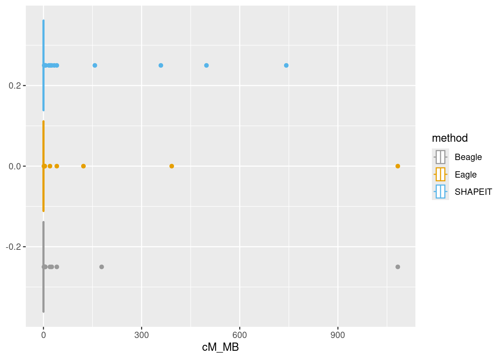
And switches:
df_het %>%
filter(!is.na(cM_MB)) %>%
select(pos, cM_MB, beagle_switch, eagle_switch, shapeit_switch) %>%
rename(Beagle = beagle_switch, Eagle = eagle_switch, SHAPEIT = shapeit_switch) %>%
pivot_longer(Beagle:SHAPEIT, values_to = "flips", names_to = "method") %>%
filter(flips == 1) %>%
ggplot(aes(x = cM_MB, color = method)) +
geom_boxplot() +
scale_color_manual(values = cbPalette)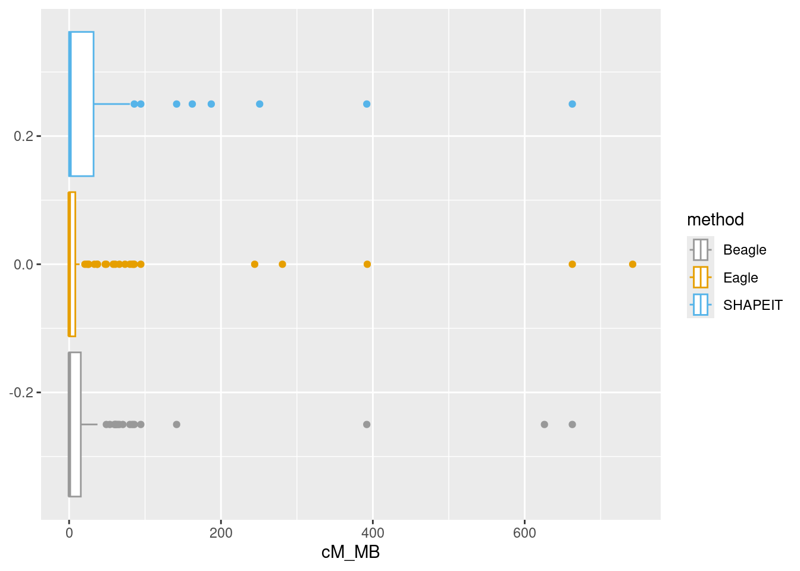
Let’s first get weighted average values for recombination in MB bins:
df_rr_x <- df_rr_x %>%
mutate(bin = ceiling( (end - ((end - start)/2)) / 1e6),
width = end - start)
df_rr_15 <- df_rr_15 %>%
mutate(bin = ceiling( (end - ((end - start)/2)) / 1e6),
width = end - start)
df_rr_22 <- df_rr_22 %>%
mutate(bin = ceiling( (end - ((end - start)/2)) / 1e6),
width = end - start)
df_rr_8 <- df_rr_8 %>%
mutate(bin = ceiling( (end - ((end - start)/2)) / 1e6),
width = end - start)
# 1kgp
df_rr_1kgp_x <- df_rr_1kgp_x %>%
mutate(bin = ceiling( (end - ((end - start)/2)) / 1e6),
width = end - start)
df_rr_1kgp_8 <- df_rr_1kgp_8 %>%
mutate(bin = ceiling( (end - ((end - start)/2)) / 1e6),
width = end - start)
df_rr_1kgp_15 <- df_rr_1kgp_15 %>%
mutate(bin = ceiling( (end - ((end - start)/2)) / 1e6),
width = end - start)
df_rr_1kgp_22 <- df_rr_1kgp_22 %>%
mutate(bin = ceiling( (end - ((end - start)/2)) / 1e6),
width = end - start)
# summary by bin
df_rr_x_bin <- df_rr_x %>%
group_by(bin) %>%
summarise(cM_MB_w = weighted.mean(cM_MB, width, na.rm = T),
cM_MB_max = max(cM_MB, na.rm = T),
cM_var = sqrt(sum(width * ((cM_MB - cM_MB_w)^2), na.rm = T)/(sum(width)-1)),
n_obs = n())
df_rr_15_bin <- df_rr_15 %>%
group_by(bin) %>%
summarise(cM_MB_w = weighted.mean(cM_MB, width, na.rm = T),
cM_MB_max = max(cM_MB, na.rm = T),
cM_var = sqrt(sum(width * ((cM_MB - cM_MB_w)^2), na.rm = T)/(sum(width)-1)),
n_obs = n())
df_rr_22_bin <- df_rr_22 %>%
group_by(bin) %>%
summarise(cM_MB_w = weighted.mean(cM_MB, width, na.rm = T),
cM_MB_max = max(cM_MB, na.rm = T),
cM_var = sqrt(sum(width * ((cM_MB - cM_MB_w)^2), na.rm = T)/(sum(width)-1)),
n_obs = n())
df_rr_8_bin <- df_rr_8 %>%
group_by(bin) %>%
summarise(cM_MB_w = weighted.mean(cM_MB, width, na.rm = T),
cM_MB_max = max(cM_MB, na.rm = T),
cM_var = sqrt(sum(width * ((cM_MB - cM_MB_w)^2), na.rm = T)/(sum(width)-1)),
n_obs = n())
# 1kgp
df_rr_1kgp_x_bin <- df_rr_1kgp_x %>%
group_by(bin) %>%
summarise(cM_MB_w = weighted.mean(cM_MB, width, na.rm = T),
cM_MB_max = max(cM_MB, na.rm = T),
cM_var = sqrt(sum(width * ((cM_MB - cM_MB_w)^2), na.rm = T)/(sum(width)-1)),
n_obs = n())
df_rr_1kgp_15_bin <- df_rr_1kgp_15 %>%
group_by(bin) %>%
summarise(cM_MB_w = weighted.mean(cM_MB, width, na.rm = T),
cM_MB_max = max(cM_MB, na.rm = T),
cM_var = sqrt(sum(width * ((cM_MB - cM_MB_w)^2), na.rm = T)/(sum(width)-1)),
n_obs = n())
df_rr_1kgp_22_bin <- df_rr_1kgp_22 %>%
group_by(bin) %>%
summarise(cM_MB_w = weighted.mean(cM_MB, width, na.rm = T),
cM_MB_max = max(cM_MB, na.rm = T),
cM_var = sqrt(sum(width * ((cM_MB - cM_MB_w)^2), na.rm = T)/(sum(width)-1)),
n_obs = n())
df_rr_1kgp_8_bin <- df_rr_1kgp_8 %>%
group_by(bin) %>%
summarise(cM_MB_w = weighted.mean(cM_MB, width, na.rm = T),
cM_MB_max = max(cM_MB, na.rm = T),
cM_var = sqrt(sum(width * ((cM_MB - cM_MB_w)^2), na.rm = T)/(sum(width)-1)),
n_obs = n())Aside: let’s compare the deCODE and 1kGP recombination rates:
df_rr_x_bin %>%
full_join(df_rr_1kgp_x_bin, by = "bin", suffix = c("_deCODE", "_1kGP")) %>%
select(bin, contains("cM_MB_w")) %>%
pivot_longer(-bin, names_to = "data_source", values_to = "cM_MB") %>%
ggplot(aes(x = bin, y = cM_MB, color = data_source)) +
geom_point() +
geom_line() +
scale_color_manual(values = cbPalette)Warning: Removed 5 rows containing missing values or values outside the scale range
(`geom_point()`).Warning: Removed 5 rows containing missing values or values outside the scale range
(`geom_line()`).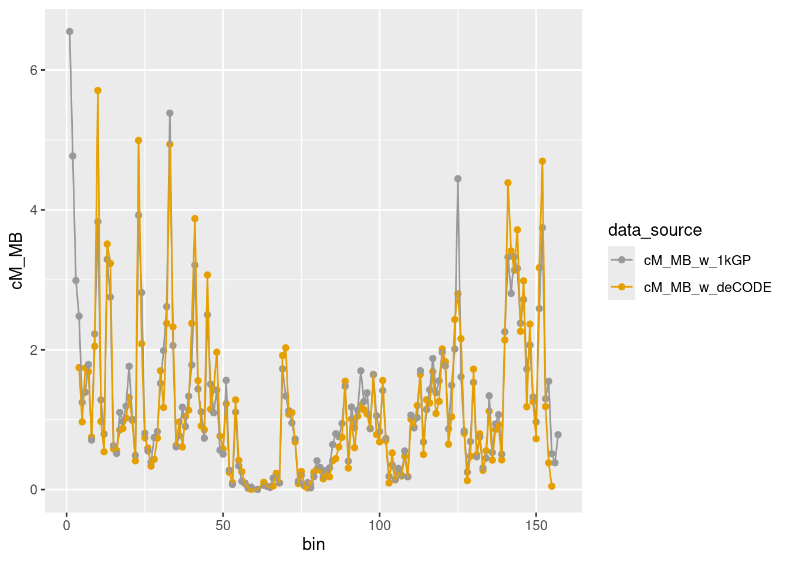
df_rr_15_bin %>%
full_join(df_rr_1kgp_15_bin, by = "bin", suffix = c("_deCODE", "_1kGP")) %>%
select(bin, contains("cM_MB_w")) %>%
pivot_longer(-bin, names_to = "data_source", values_to = "cM_MB") %>%
ggplot(aes(x = bin, y = cM_MB, color = data_source)) +
geom_point() +
geom_line() +
scale_color_manual(values = cbPalette)Warning: Removed 5 rows containing missing values or values outside the scale range
(`geom_point()`).
Removed 5 rows containing missing values or values outside the scale range
(`geom_line()`).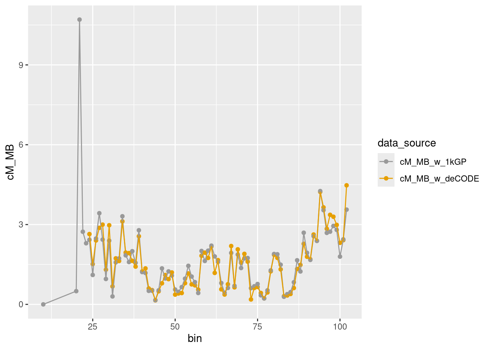
To do: plot some of these distributions
x_mb_dir <- "/net/snowwhite/home/beckandy/research/phasing_clean/output/switch_errors/mb_error_rate/"
chr15_mb_dir <- "/net/snowwhite/home/beckandy/research/phasing_clean/output/trio_phase_15/mb_error_rate/"
chr22_mb_dir <- "/net/snowwhite/home/beckandy/research/phasing_clean/output/trio_phase_22/mb_error_rate/"
load_mb_switch <- function(res_dir, id){
f_name <- paste0(res_dir, "sample_", id, ".csv")
return(read_csv(f_name, show_col_types = F))
}df_mb_switch <- load_mb_switch(x_mb_dir, 1)
df_mb_switch <- df_mb_switch %>%
left_join(df_rr_x_bin, by = "bin")
df_mb_switch %>%
select(bin,cM_MB_w, n_switch_beagle, n_switch_eagle, n_switch_shapeit) %>%
rename(Beagle = n_switch_beagle, Eagle = n_switch_eagle, SHAPEIT = n_switch_shapeit) %>%
pivot_longer( Beagle:SHAPEIT, names_to = "method", values_to = "Switches") %>%
filter(!is.na(cM_MB_w)) %>%
ggplot(aes(x = cM_MB_w, y = Switches, colour = method)) +
geom_point() +
scale_color_manual(values = cbPalette)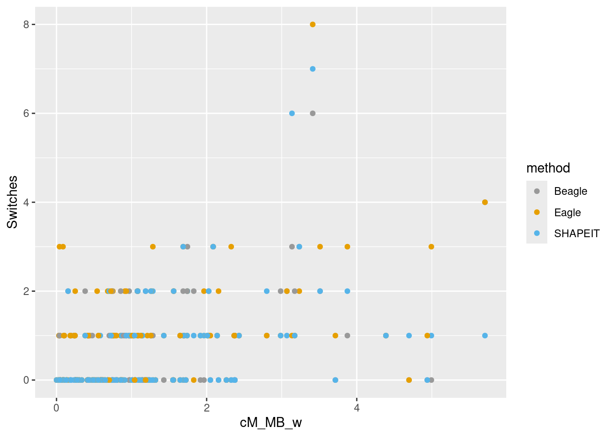
p1 <- df_mb_switch %>%
select(bin,cM_MB_w, n_switch_beagle, n_switch_eagle, n_switch_shapeit) %>%
rename(Beagle = n_switch_beagle, Eagle = n_switch_eagle, SHAPEIT = n_switch_shapeit) %>%
pivot_longer( Beagle:SHAPEIT, names_to = "method", values_to = "Switches") %>%
ggplot(aes(x = bin, y = Switches, colour = method)) +
geom_point() +
geom_line() +
scale_color_manual(values = cbPalette) +
theme(legend.position = "top")
p2 <- df_mb_switch %>%
ggplot(aes(x = bin, y = cM_MB_w)) +
geom_point() +
geom_line()
p3 <- df_mb_switch %>%
select(bin,cM_MB_w, n_flip_beagle, n_flip_eagle, n_flip_shapeit) %>%
rename(Beagle = n_flip_beagle, Eagle = n_flip_eagle, SHAPEIT = n_flip_shapeit) %>%
pivot_longer( Beagle:SHAPEIT, names_to = "method", values_to = "Flips") %>%
ggplot(aes(x = bin, y = Flips, colour = method)) +
geom_point() +
geom_line() +
scale_color_manual(values = cbPalette) +
guides(color="none")
grid.arrange(p1, p2, p3, ncol = 1)Warning: Removed 2 rows containing missing values or values outside the scale range
(`geom_point()`).Warning: Removed 2 rows containing missing values or values outside the scale range
(`geom_line()`).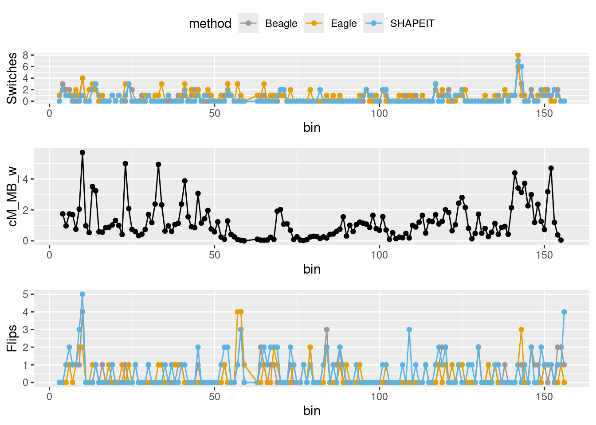
df_mb_switch_eur <- load_mb_switch(x_mb_dir, 1)
for(i in 2:200){
df_mb_switch_2 <- load_mb_switch(x_mb_dir, i)
df_mb_switch_eur <- df_mb_switch_eur %>%
inner_join(df_mb_switch_2, by = "bin", suffix = c("", "2"))
df_mb_switch_eur[is.na(df_mb_switch_eur)] <- 0
df_mb_switch_eur <- df_mb_switch_eur %>%
mutate(n_het = n_het + n_het2,
n_switch_beagle = n_switch_beagle + n_switch_beagle2,
n_switch_eagle = n_switch_eagle + n_switch_eagle2,
n_switch_shapeit = n_switch_shapeit + n_switch_shapeit2,
n_flip_beagle = n_flip_beagle + n_flip_beagle2,
n_flip_eagle = n_flip_eagle + n_flip_eagle2,
n_flip_shapeit = n_flip_shapeit + n_flip_shapeit2) %>%
select(!contains("2"))
}df_mb_switch_afr <- load_mb_switch(x_mb_dir, 201)
for(i in 201:400){
df_mb_switch_2 <- load_mb_switch(x_mb_dir, i)
df_mb_switch_afr <- df_mb_switch_afr %>%
inner_join(df_mb_switch_2, by = "bin", suffix = c("", "2"))
df_mb_switch_afr[is.na(df_mb_switch_afr)] <- 0
df_mb_switch_afr <- df_mb_switch_afr %>%
mutate(n_het = n_het + n_het2,
n_switch_beagle = n_switch_beagle + n_switch_beagle2,
n_switch_eagle = n_switch_eagle + n_switch_eagle2,
n_switch_shapeit = n_switch_shapeit + n_switch_shapeit2,
n_flip_beagle = n_flip_beagle + n_flip_beagle2,
n_flip_eagle = n_flip_eagle + n_flip_eagle2,
n_flip_shapeit = n_flip_shapeit + n_flip_shapeit2) %>%
select(!contains("2"))
}Aside: what does the variation of cM_MB look like
per-bin? Let’s plot all values for a single bin in chromosome X (bin
6):
df_rr_x %>%
filter(bin == 6) %>%
ggplot(aes(x = start, y = cM_MB)) +
geom_point() +
geom_hline(yintercept = mean({df_rr_x %>% filter(bin==6) %>% pull(cM_MB)}, na.rm = T), colour = "red")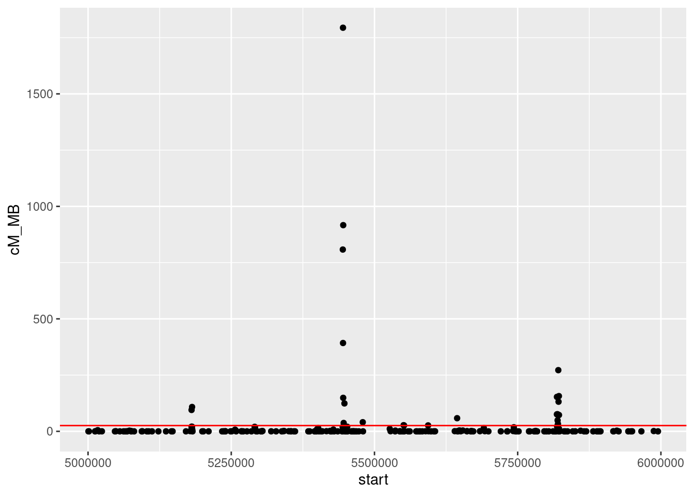
geom_hline(yintercept = median({df_rr_x %>% filter(bin==6) %>% pull(cM_MB)}, na.rm = T), colour = "blue")mapping: yintercept = ~yintercept
geom_hline: na.rm = FALSE
stat_identity: na.rm = FALSE
position_identity df_rr_x_bin %>%
select(bin, cM_MB_w, cM_MB_max) %>%
pivot_longer(-bin, names_to = "stat", values_to = "val") %>%
ggplot(aes(x = bin, y = val, color = stat)) +
geom_point()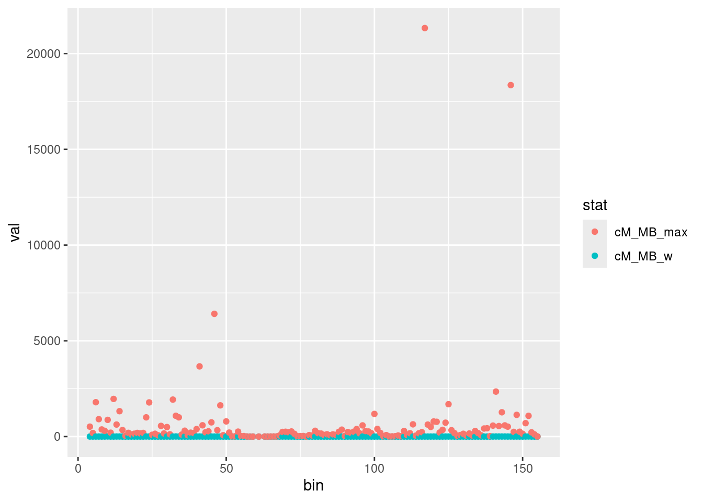
df_rr_x_bin %>%
ggplot(aes(x = bin, y = cM_MB_w)) +
geom_point()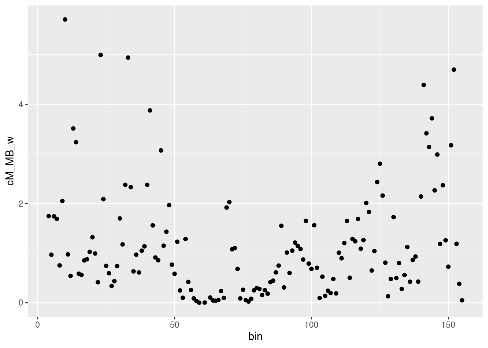
df_rr_x_bin %>%
ggplot(aes(x = bin, y = cM_MB_max)) +
geom_point()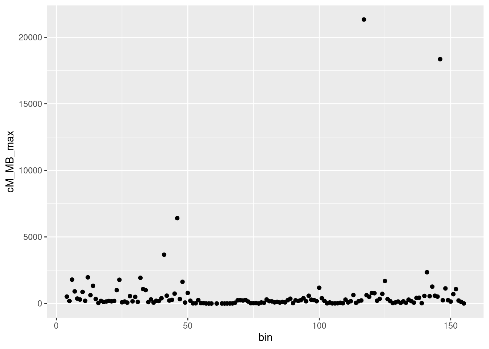
Plot EUR and AFR counts in each bin against average recombination rate:
df_mb_switch_eur <- left_join(df_mb_switch_eur, df_rr_x_bin, by = "bin")
p1 <- df_mb_switch_eur %>%
select(bin, contains("switch")) %>%
pivot_longer(-bin, names_to = "stat", values_to = "val") %>%
ggplot(aes(x = bin, y = val, color = stat)) +
geom_point() +
geom_line() +
theme(legend.position = "bottom")
p2 <- df_mb_switch_eur %>%
ggplot(aes(x = bin, y = cM_MB_w)) +
geom_point() +
geom_line()
grid.arrange(p1, p2, ncol = 1)Warning: Removed 1 row containing missing values or values outside the scale range
(`geom_point()`).Warning: Removed 1 row containing missing values or values outside the scale range
(`geom_line()`).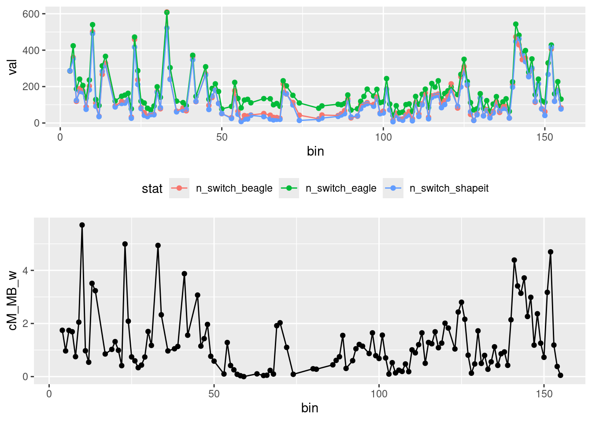
coeff <- max(df_mb_switch_eur$n_switch_eagle) / max(df_mb_switch_eur$cM_MB_w, na.rm = T)
df_mb_switch_eur %>%
select(bin, contains("switch"), cM_MB_w) %>%
pivot_longer(contains("switch"), names_to = "stat", values_to = "val") %>%
ggplot(aes(x = bin)) +
geom_line(aes(y = cM_MB_w)) +
geom_line(aes(y = val / coeff, color = stat)) +
scale_y_continuous(
name = "Weight Mean cM_MB",
sec.axis = sec_axis(~.*coeff, name = "Switches")
)Warning: Removed 3 rows containing missing values or values outside the scale range
(`geom_line()`).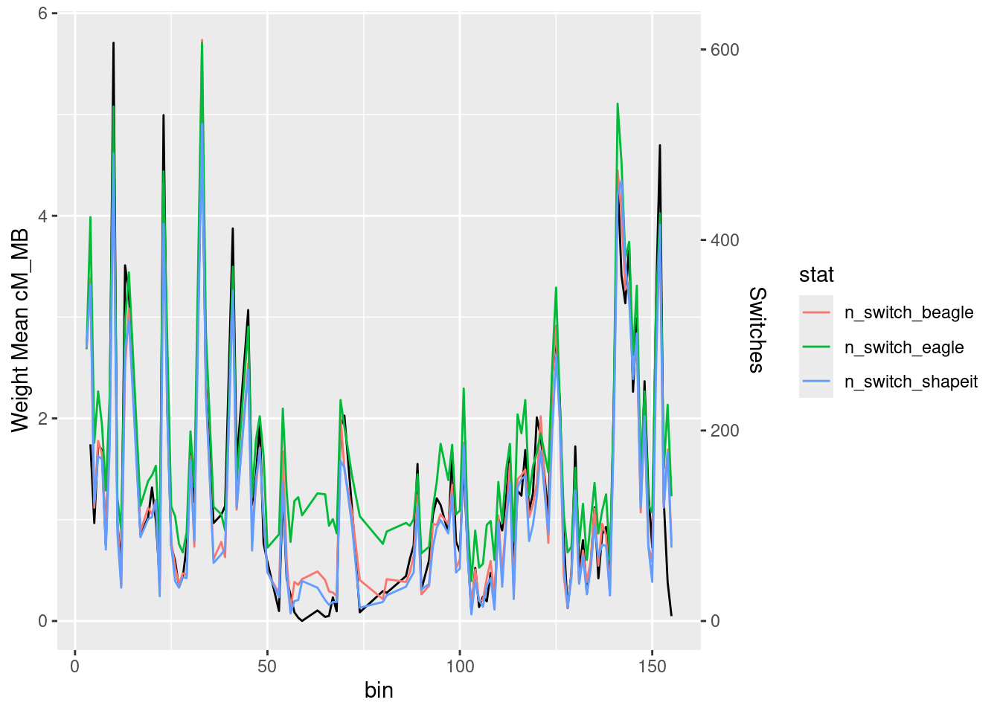
corrr::correlate({df_mb_switch_eur %>% select(contains("switch"), cM_MB_w)})Correlation computed with
• Method: 'pearson'
• Missing treated using: 'pairwise.complete.obs'# A tibble: 4 × 5
term n_switch_beagle n_switch_eagle n_switch_shapeit cM_MB_w
<chr> <dbl> <dbl> <dbl> <dbl>
1 n_switch_beagle NA 0.987 0.992 0.954
2 n_switch_eagle 0.987 NA 0.983 0.932
3 n_switch_shapeit 0.992 0.983 NA 0.954
4 cM_MB_w 0.954 0.932 0.954 NA df_mb_switch_eur %>%
select(bin, contains("flip"), cM_MB_w) %>%
pivot_longer(contains("flip"), names_to = "stat", values_to = "val") %>%
ggplot(aes(x = bin)) +
geom_line(aes(y = cM_MB_w)) +
geom_line(aes(y = val / coeff, color = stat)) +
scale_y_continuous(
name = "Weight Mean cM_MB",
sec.axis = sec_axis(~.*coeff, name = "Flips")
)Warning: Removed 3 rows containing missing values or values outside the scale range
(`geom_line()`).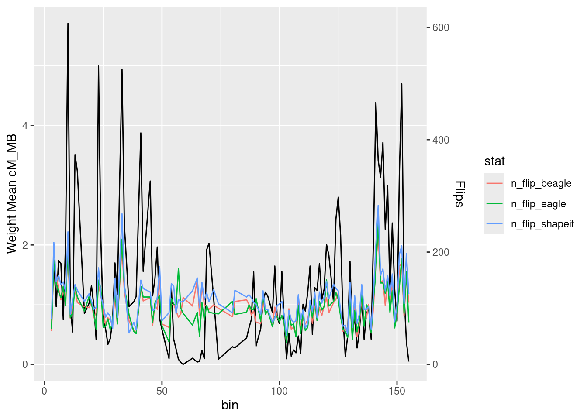
corrr::correlate({df_mb_switch_eur %>% select(contains("flip"), cM_MB_w)})Correlation computed with
• Method: 'pearson'
• Missing treated using: 'pairwise.complete.obs'# A tibble: 4 × 5
term n_flip_beagle n_flip_eagle n_flip_shapeit cM_MB_w
<chr> <dbl> <dbl> <dbl> <dbl>
1 n_flip_beagle NA 0.889 0.955 0.675
2 n_flip_eagle 0.889 NA 0.905 0.709
3 n_flip_shapeit 0.955 0.905 NA 0.669
4 cM_MB_w 0.675 0.709 0.669 NA Let’s see if this is robust to choice of recombination rate estimate:
df_mb_switch_eur <- left_join(df_mb_switch_eur, df_rr_1kgp_x_bin, by = "bin", suffix = c("", "_1kGP"))
p1 <- df_mb_switch_eur %>%
select(bin, contains("switch")) %>%
pivot_longer(-bin, names_to = "stat", values_to = "val") %>%
ggplot(aes(x = bin, y = val, color = stat)) +
geom_point() +
geom_line() +
theme(legend.position = "bottom")
p2 <- df_mb_switch_eur %>%
ggplot(aes(x = bin, y = cM_MB_w_1kGP)) +
geom_point() +
geom_line()
grid.arrange(p1, p2, ncol = 1)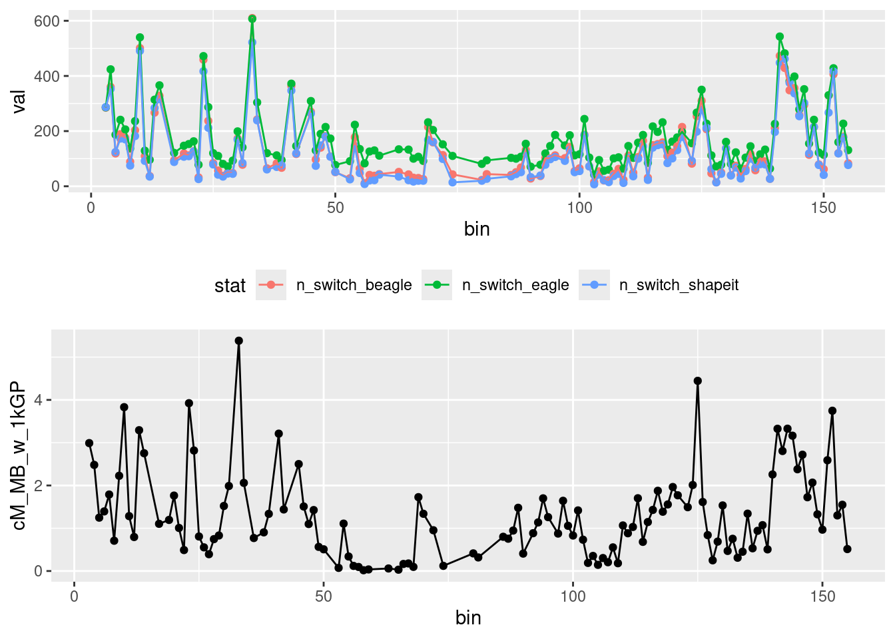
coeff <- max(df_mb_switch_eur$n_switch_eagle) / max(df_mb_switch_eur$cM_MB_w_1kGP, na.rm = T)
df_mb_switch_eur %>%
select(bin, contains("switch"), cM_MB_w_1kGP) %>%
pivot_longer(contains("switch"), names_to = "stat", values_to = "val") %>%
ggplot(aes(x = bin)) +
geom_line(aes(y = cM_MB_w_1kGP)) +
geom_line(aes(y = val / coeff, color = stat)) +
scale_y_continuous(
name = "Weight Mean cM_MB",
sec.axis = sec_axis(~.*coeff, name = "Switches")
)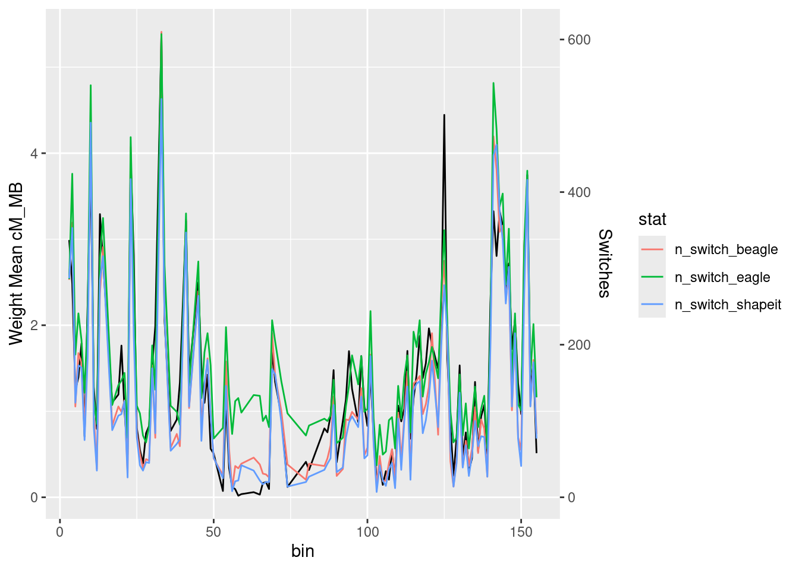
corrr::correlate({df_mb_switch_eur %>% select(contains("switch"), cM_MB_w_1kGP)})Correlation computed with
• Method: 'pearson'
• Missing treated using: 'pairwise.complete.obs'# A tibble: 4 × 5
term n_switch_beagle n_switch_eagle n_switch_shapeit cM_MB_w_1kGP
<chr> <dbl> <dbl> <dbl> <dbl>
1 n_switch_beagle NA 0.987 0.992 0.932
2 n_switch_eagle 0.987 NA 0.983 0.906
3 n_switch_shapeit 0.992 0.983 NA 0.929
4 cM_MB_w_1kGP 0.932 0.906 0.929 NA df_mb_switch_eur %>%
select(bin, contains("flip"), cM_MB_w_1kGP) %>%
pivot_longer(contains("flip"), names_to = "stat", values_to = "val") %>%
ggplot(aes(x = bin)) +
geom_line(aes(y = cM_MB_w_1kGP)) +
geom_line(aes(y = val / coeff, color = stat)) +
scale_y_continuous(
name = "Weight Mean cM_MB",
sec.axis = sec_axis(~.*coeff, name = "Flips")
)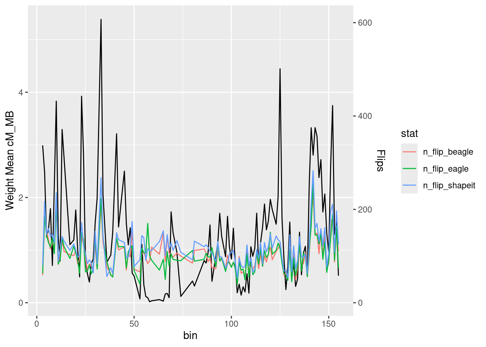
corrr::correlate({df_mb_switch_eur %>% select(contains("flip"), cM_MB_w_1kGP)})Correlation computed with
• Method: 'pearson'
• Missing treated using: 'pairwise.complete.obs'# A tibble: 4 × 5
term n_flip_beagle n_flip_eagle n_flip_shapeit cM_MB_w_1kGP
<chr> <dbl> <dbl> <dbl> <dbl>
1 n_flip_beagle NA 0.889 0.955 0.628
2 n_flip_eagle 0.889 NA 0.905 0.669
3 n_flip_shapeit 0.955 0.905 NA 0.628
4 cM_MB_w_1kGP 0.628 0.669 0.628 NA And now AFR:
df_mb_switch_afr <- left_join(df_mb_switch_afr, df_rr_x_bin, by = "bin")
df_mb_switch_afr <- left_join(df_mb_switch_afr, df_rr_1kgp_x_bin, by = "bin", suffix = c("", "_1kGP"))
coeff <- max(df_mb_switch_afr$n_switch_eagle) / max(df_mb_switch_afr$cM_MB_w, na.rm = T)
df_mb_switch_afr %>%
select(bin, contains("switch"), cM_MB_w) %>%
pivot_longer(contains("switch"), names_to = "stat", values_to = "val") %>%
ggplot(aes(x = bin)) +
geom_line(aes(y = cM_MB_w)) +
geom_line(aes(y = val / coeff, color = stat)) +
scale_y_continuous(
name = "Weight Mean cM_MB",
sec.axis = sec_axis(~.*coeff, name = "Switches")
)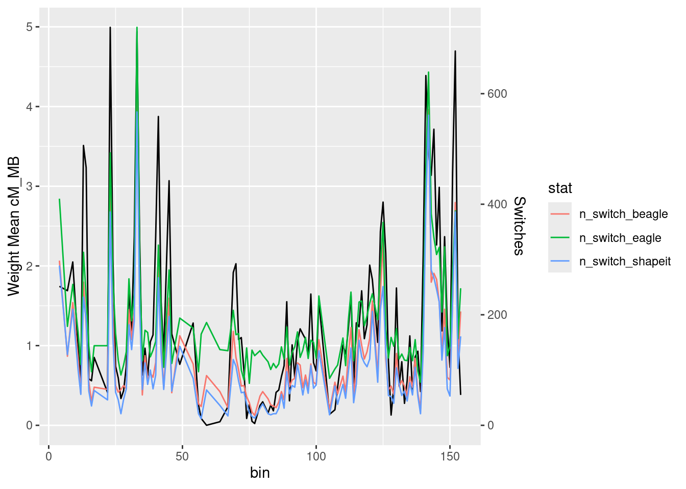
corrr::correlate({df_mb_switch_afr %>% select(contains("switch"), cM_MB_w)})Correlation computed with
• Method: 'pearson'
• Missing treated using: 'pairwise.complete.obs'# A tibble: 4 × 5
term n_switch_beagle n_switch_eagle n_switch_shapeit cM_MB_w
<chr> <dbl> <dbl> <dbl> <dbl>
1 n_switch_beagle NA 0.973 0.991 0.887
2 n_switch_eagle 0.973 NA 0.969 0.847
3 n_switch_shapeit 0.991 0.969 NA 0.893
4 cM_MB_w 0.887 0.847 0.893 NA coeff <- max(df_mb_switch_afr$n_flip_shapeit) / max(df_mb_switch_afr$cM_MB_w, na.rm = T)
df_mb_switch_afr %>%
select(bin, contains("flip"), cM_MB_w) %>%
pivot_longer(contains("flip"), names_to = "stat", values_to = "val") %>%
ggplot(aes(x = bin)) +
geom_line(aes(y = cM_MB_w)) +
geom_line(aes(y = val / coeff, color = stat)) +
scale_y_continuous(
name = "Weight Mean cM_MB",
sec.axis = sec_axis(~.*coeff, name = "Flips")
)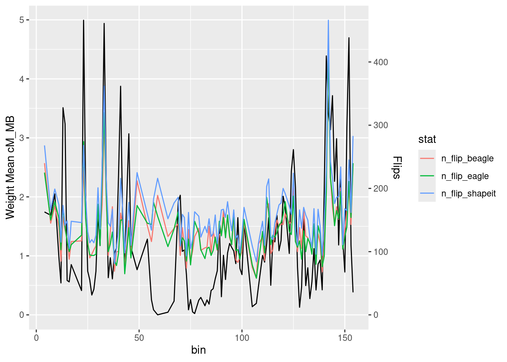
corrr::correlate({df_mb_switch_afr %>% select(contains("flip"), cM_MB_w)})Correlation computed with
• Method: 'pearson'
• Missing treated using: 'pairwise.complete.obs'# A tibble: 4 × 5
term n_flip_beagle n_flip_eagle n_flip_shapeit cM_MB_w
<chr> <dbl> <dbl> <dbl> <dbl>
1 n_flip_beagle NA 0.950 0.971 0.596
2 n_flip_eagle 0.950 NA 0.958 0.630
3 n_flip_shapeit 0.971 0.958 NA 0.597
4 cM_MB_w 0.596 0.630 0.597 NA eur_proband_ids <- df_subj_rel %>% filter(SUPER == "EUR") %>% pull(id2)
df_mb_switch_eur <- load_mb_switch(chr15_mb_dir, eur_proband_ids[1])
for(i in 2:length(eur_proband_ids)){
id <- eur_proband_ids[i]
df_mb_switch_2 <- load_mb_switch(chr15_mb_dir, id)
df_mb_switch_eur <- df_mb_switch_eur %>%
inner_join(df_mb_switch_2, by = "bin", suffix = c("", "2"))
df_mb_switch_eur[is.na(df_mb_switch_eur)] <- 0
df_mb_switch_eur <- df_mb_switch_eur %>%
mutate(n_het = n_het + n_het2,
n_switch_beagle = n_switch_beagle + n_switch_beagle2,
n_switch_eagle = n_switch_eagle + n_switch_eagle2,
n_switch_shapeit = n_switch_shapeit + n_switch_shapeit2,
n_flip_beagle = n_flip_beagle + n_flip_beagle2,
n_flip_eagle = n_flip_eagle + n_flip_eagle2,
n_flip_shapeit = n_flip_shapeit + n_flip_shapeit2) %>%
select(!contains("2"))
}df_mb_switch_eur <- left_join(df_mb_switch_eur, df_rr_15_bin, by = "bin")
df_mb_switch_eur <- left_join(df_mb_switch_eur, df_rr_1kgp_15_bin, by = "bin", suffix = c("", "_1kGP"))
coeff <- max({df_mb_switch_eur %>% select(contains("switch"))}) / max(df_mb_switch_eur$cM_MB_w, na.rm = T)
df_mb_switch_eur %>%
select(bin, contains("switch"), cM_MB_w) %>%
pivot_longer(contains("switch"), names_to = "stat", values_to = "val") %>%
ggplot(aes(x = bin)) +
geom_line(aes(y = cM_MB_w)) +
geom_line(aes(y = val / coeff, color = stat)) +
scale_y_continuous(
name = "Weight Mean cM_MB",
sec.axis = sec_axis(~.*coeff, name = "Switches")
)Warning: Removed 15 rows containing missing values or values outside the scale range
(`geom_line()`).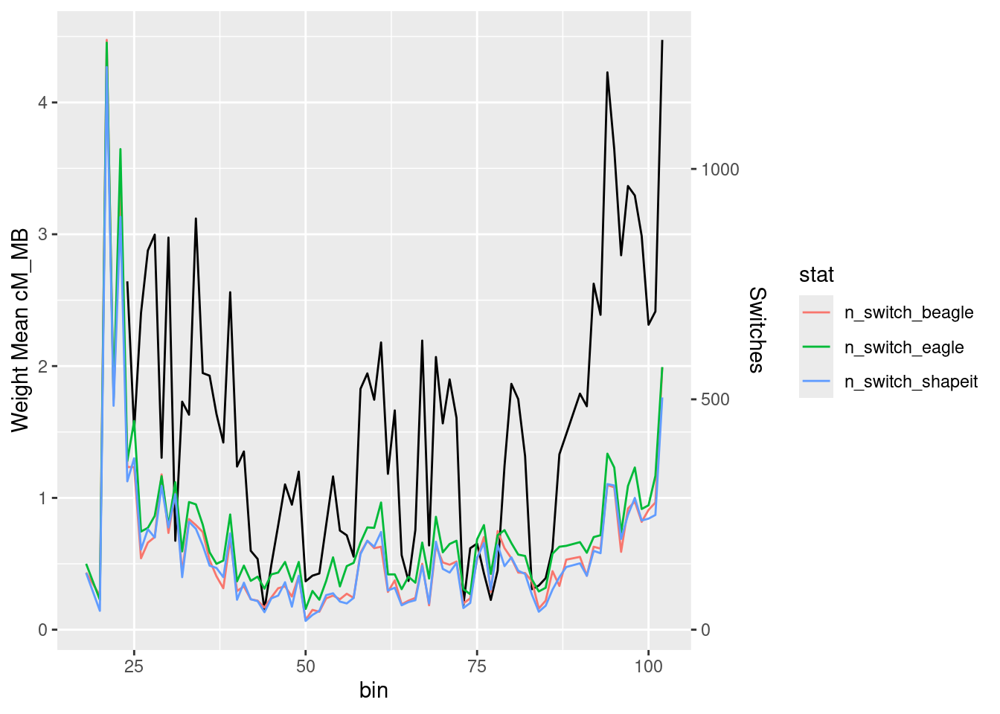
corrr::correlate({df_mb_switch_eur %>% select(contains("switch"), cM_MB_w)})Correlation computed with
• Method: 'pearson'
• Missing treated using: 'pairwise.complete.obs'# A tibble: 4 × 5
term n_switch_beagle n_switch_eagle n_switch_shapeit cM_MB_w
<chr> <dbl> <dbl> <dbl> <dbl>
1 n_switch_beagle NA 0.992 0.996 0.739
2 n_switch_eagle 0.992 NA 0.994 0.756
3 n_switch_shapeit 0.996 0.994 NA 0.774
4 cM_MB_w 0.739 0.756 0.774 NA coeff <- max({df_mb_switch_eur %>% select(contains("flip"))}) / max(df_mb_switch_eur$cM_MB_w, na.rm = T)
df_mb_switch_eur %>%
select(bin, contains("flip"), cM_MB_w) %>%
pivot_longer(contains("flip"), names_to = "stat", values_to = "val") %>%
ggplot(aes(x = bin)) +
geom_line(aes(y = cM_MB_w)) +
geom_line(aes(y = val / coeff, color = stat)) +
scale_y_continuous(
name = "Weight Mean cM_MB",
sec.axis = sec_axis(~.*coeff, name = "Flips")
)Warning: Removed 15 rows containing missing values or values outside the scale range
(`geom_line()`).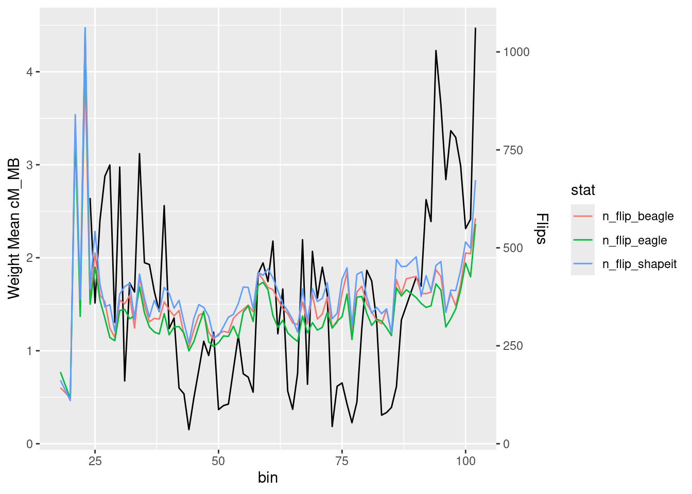
corrr::correlate({df_mb_switch_eur %>% select(contains("flip"), cM_MB_w)})Correlation computed with
• Method: 'pearson'
• Missing treated using: 'pairwise.complete.obs'# A tibble: 4 × 5
term n_flip_beagle n_flip_eagle n_flip_shapeit cM_MB_w
<chr> <dbl> <dbl> <dbl> <dbl>
1 n_flip_beagle NA 0.975 0.987 0.574
2 n_flip_eagle 0.975 NA 0.972 0.540
3 n_flip_shapeit 0.987 0.972 NA 0.545
4 cM_MB_w 0.574 0.540 0.545 NA It looks like RR and error rates are much less correlated here.
Let’s instead compare the chromosome 15 error rates to the rate of triple hets in MB bins. First, let’s sum the number of triple het sites in each trio in each MB bin
triple_het_dir <- "data/1kgp/chr15/triple_het/"
df_th_eur <- read_tsv(paste0(triple_het_dir,
"sample_",
eur_proband_ids[1],
".tsv"),
col_names = c("chr", "pos"),
show_col_types = FALSE) %>%
mutate(bin = ceiling(pos / 1e6)) %>%
group_by(bin) %>%
summarize(n_th = n()) %>%
select(bin, n_th)
for(i in 2:length(eur_proband_ids)){
df_th_eur2 <- read_tsv(paste0(triple_het_dir,
"sample_",
eur_proband_ids[i],
".tsv"),
col_names = c("chr", "pos"),
show_col_types = FALSE) %>%
mutate(bin = ceiling(pos / 1e6)) %>%
group_by(bin) %>%
summarize(n_th = n()) %>%
select(bin, n_th)
df_th_eur <- full_join(df_th_eur, df_th_eur2, by = "bin", suffix = c("","2")) %>%
replace_na(list("n_th" = 0, "n_th2" = 0)) %>%
mutate(n_th = n_th + n_th2) %>%
select(-n_th2)
}Let’s see how error counts per bin looks like plotted along with triple het counts per bin:
df_mb_switch_eur <- full_join(df_mb_switch_eur, df_th_eur, by = "bin")
coeff <- max(df_mb_switch_eur$n_th, na.rm = T) /
max({df_mb_switch_eur %>% select(contains("switch"))}, na.rm=T)
df_mb_switch_eur %>%
select(bin, contains("switch"), n_th) %>%
pivot_longer(contains("switch"), names_to = "stat", values_to = "val") %>%
ggplot(aes(x = bin)) +
geom_line(aes(y = n_th / coeff)) +
geom_line(aes(y = val, color = stat)) +
scale_y_continuous(
name = "Switches",
sec.axis = sec_axis(~.*coeff, name = "Count Triple Hets")
)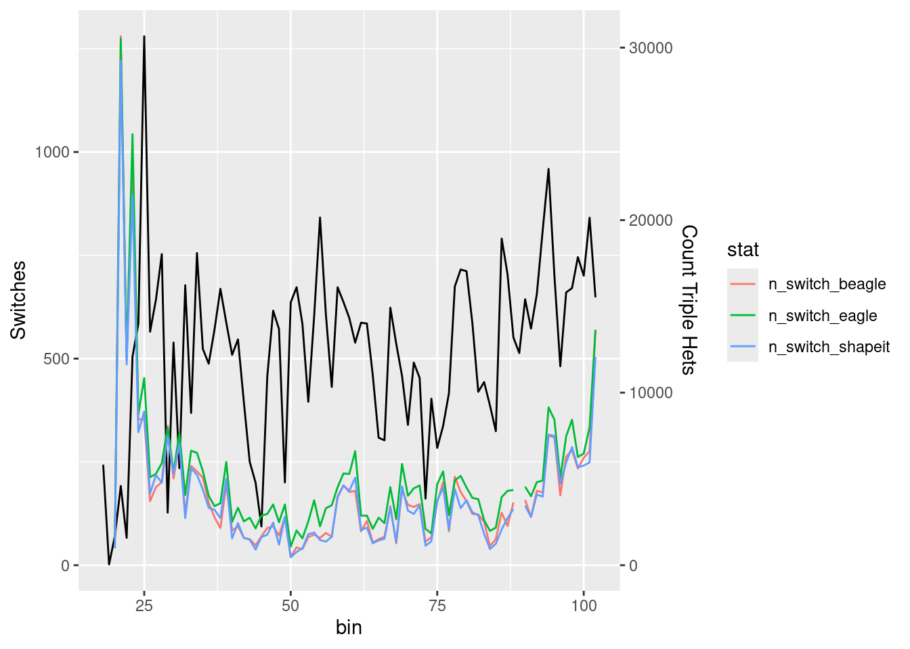
corrr::correlate({df_mb_switch_eur %>% select(contains("switch"), n_th)})Correlation computed with
• Method: 'pearson'
• Missing treated using: 'pairwise.complete.obs'# A tibble: 4 × 5
term n_switch_beagle n_switch_eagle n_switch_shapeit n_th
<chr> <dbl> <dbl> <dbl> <dbl>
1 n_switch_beagle NA 0.992 0.996 -0.00346
2 n_switch_eagle 0.992 NA 0.994 0.0423
3 n_switch_shapeit 0.996 0.994 NA 0.0113
4 n_th -0.00346 0.0423 0.0113 NA coeff <- max(df_mb_switch_eur$n_th, na.rm = T) / max(df_mb_switch_eur$n_flip_shapeit, na.rm=T)
df_mb_switch_eur %>%
select(bin, contains("flip"), cM_MB_w) %>%
pivot_longer(contains("flip"), names_to = "stat", values_to = "val") %>%
ggplot(aes(x = bin)) +
geom_line(aes(y = cM_MB_w)) +
geom_line(aes(y = val / coeff, color = stat)) +
scale_y_continuous(
name = "Weight Mean cM_MB",
sec.axis = sec_axis(~.*coeff, name = "Flips")
)Warning: Removed 18 rows containing missing values or values outside the scale range
(`geom_line()`).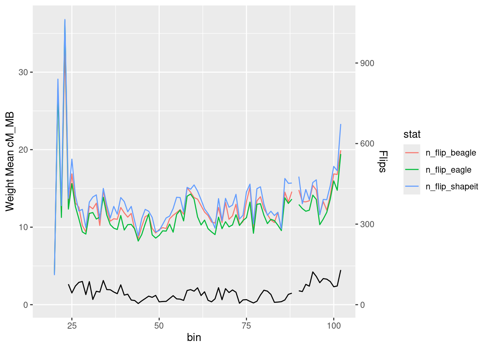
corrr::correlate({df_mb_switch_eur %>% select(contains("flip"), cM_MB_w)})Correlation computed with
• Method: 'pearson'
• Missing treated using: 'pairwise.complete.obs'# A tibble: 4 × 5
term n_flip_beagle n_flip_eagle n_flip_shapeit cM_MB_w
<chr> <dbl> <dbl> <dbl> <dbl>
1 n_flip_beagle NA 0.975 0.987 0.574
2 n_flip_eagle 0.975 NA 0.972 0.540
3 n_flip_shapeit 0.987 0.972 NA 0.545
4 cM_MB_w 0.574 0.540 0.545 NA triple_het_dir <- "data/1kgp/chr22/triple_het/"
df_th_eur <- read_tsv(paste0(triple_het_dir,
"sample_",
eur_proband_ids[1],
".tsv"),
col_names = c("chr", "pos"),
show_col_types = FALSE) %>%
mutate(bin = ceiling(pos / 1e6)) %>%
group_by(bin) %>%
summarize(n_th = n()) %>%
select(bin, n_th)
for(i in 2:length(eur_proband_ids)){
df_th_eur2 <- read_tsv(paste0(triple_het_dir,
"sample_",
eur_proband_ids[i],
".tsv"),
col_names = c("chr", "pos"),
show_col_types = FALSE) %>%
mutate(bin = ceiling(pos / 1e6)) %>%
group_by(bin) %>%
summarize(n_th = n()) %>%
select(bin, n_th)
df_th_eur <- full_join(df_th_eur, df_th_eur2, by = "bin", suffix = c("","2")) %>%
replace_na(list("n_th" = 0, "n_th2" = 0)) %>%
mutate(n_th = n_th + n_th2) %>%
select(-n_th2)
}
eur_proband_ids <- df_subj_rel %>% filter(SUPER == "EUR") %>% pull(id2)
df_mb_switch_eur <- load_mb_switch(chr22_mb_dir, eur_proband_ids[1])
for(i in 2:length(eur_proband_ids)){
id <- eur_proband_ids[i]
df_mb_switch_2 <- load_mb_switch(chr22_mb_dir, id)
df_mb_switch_eur <- df_mb_switch_eur %>%
inner_join(df_mb_switch_2, by = "bin", suffix = c("", "2"))
df_mb_switch_eur[is.na(df_mb_switch_eur)] <- 0
df_mb_switch_eur <- df_mb_switch_eur %>%
mutate(n_het = n_het + n_het2,
n_switch_beagle = n_switch_beagle + n_switch_beagle2,
n_switch_eagle = n_switch_eagle + n_switch_eagle2,
n_switch_shapeit = n_switch_shapeit + n_switch_shapeit2,
n_flip_beagle = n_flip_beagle + n_flip_beagle2,
n_flip_eagle = n_flip_eagle + n_flip_eagle2,
n_flip_shapeit = n_flip_shapeit + n_flip_shapeit2) %>%
select(!contains("2"))
}df_mb_switch_eur <- left_join(df_mb_switch_eur, df_rr_22_bin, by = "bin")
df_mb_switch_eur <- left_join(df_mb_switch_eur, df_rr_1kgp_22_bin, by = "bin", suffix = c("", "_1kGP"))
coeff <- max({df_mb_switch_eur %>% select(contains("switch"))}, na.rm = T) /
max(df_mb_switch_eur$cM_MB_w_1kGP, na.rm = T)
df_mb_switch_eur %>%
select(bin, contains("switch"), cM_MB_w_1kGP) %>%
pivot_longer(contains("switch"), names_to = "stat", values_to = "val") %>%
ggplot(aes(x = bin)) +
geom_line(aes(y = cM_MB_w_1kGP)) +
geom_line(aes(y = val / coeff, color = stat)) +
scale_y_continuous(
name = "Weight Mean cM_MB",
sec.axis = sec_axis(~.*coeff, name = "Switches")
)Warning: Removed 9 rows containing missing values or values outside the scale range
(`geom_line()`).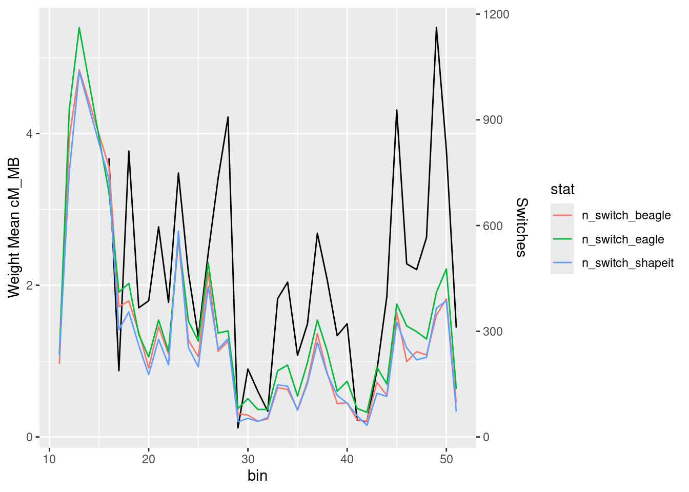
corrr::correlate({df_mb_switch_eur %>% select(contains("switch"), cM_MB_w_1kGP)})Correlation computed with
• Method: 'pearson'
• Missing treated using: 'pairwise.complete.obs'# A tibble: 4 × 5
term n_switch_beagle n_switch_eagle n_switch_shapeit cM_MB_w_1kGP
<chr> <dbl> <dbl> <dbl> <dbl>
1 n_switch_beagle NA 0.991 0.994 0.701
2 n_switch_eagle 0.991 NA 0.988 0.750
3 n_switch_shapeit 0.994 0.988 NA 0.742
4 cM_MB_w_1kGP 0.701 0.750 0.742 NA df_mb_switch_eur <- full_join(df_mb_switch_eur, df_th_eur, by = "bin")
coeff <- max(df_mb_switch_eur$n_th, na.rm = T) /
max({df_mb_switch_eur %>% select(contains("switch"))}, na.rm=T)
df_mb_switch_eur %>%
select(bin, contains("switch"), n_th) %>%
pivot_longer(contains("switch"), names_to = "stat", values_to = "val") %>%
ggplot(aes(x = bin)) +
geom_line(aes(y = n_th / coeff)) +
geom_line(aes(y = val, color = stat)) +
scale_y_continuous(
name = "Switches",
sec.axis = sec_axis(~.*coeff, name = "Count Triple Hets")
)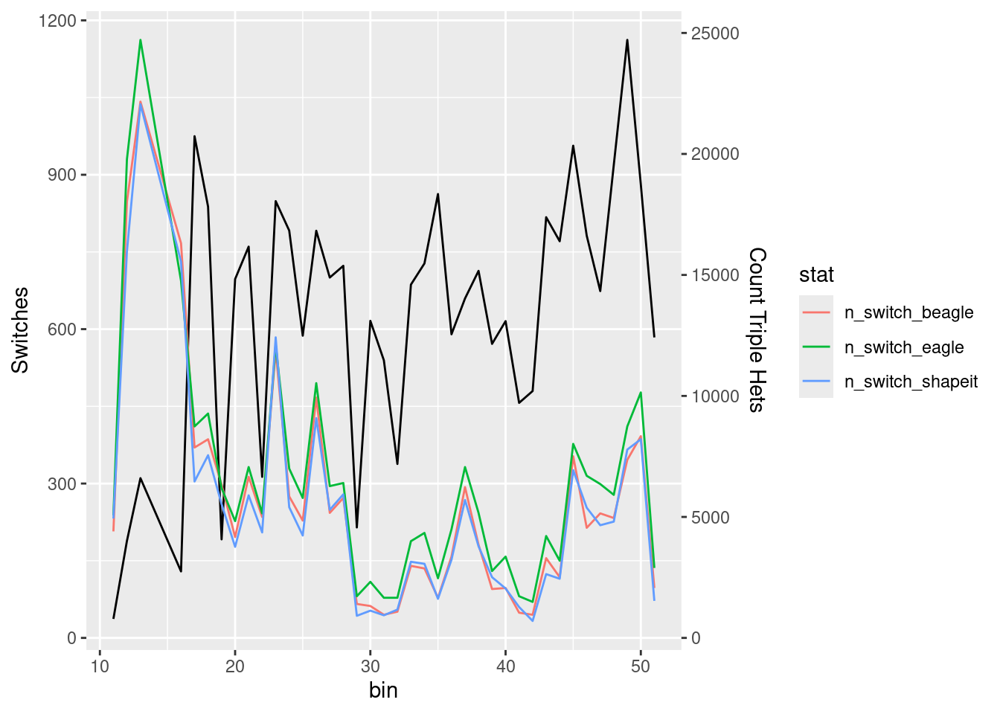
corrr::correlate({df_mb_switch_eur %>% select(contains("switch"), n_th)})Correlation computed with
• Method: 'pearson'
• Missing treated using: 'pairwise.complete.obs'# A tibble: 4 × 5
term n_switch_beagle n_switch_eagle n_switch_shapeit n_th
<chr> <dbl> <dbl> <dbl> <dbl>
1 n_switch_beagle NA 0.991 0.994 -0.151
2 n_switch_eagle 0.991 NA 0.988 -0.105
3 n_switch_shapeit 0.994 0.988 NA -0.138
4 n_th -0.151 -0.105 -0.138 NA
sessionInfo()R version 4.4.1 (2024-06-14)
Platform: x86_64-pc-linux-gnu
Running under: Ubuntu 20.04.6 LTS
Matrix products: default
BLAS: /usr/lib/x86_64-linux-gnu/openblas-pthread/libblas.so.3
LAPACK: /usr/lib/x86_64-linux-gnu/openblas-pthread/liblapack.so.3; LAPACK version 3.9.0
locale:
[1] LC_CTYPE=en_US.UTF-8 LC_NUMERIC=C
[3] LC_TIME=en_US.UTF-8 LC_COLLATE=en_US.UTF-8
[5] LC_MONETARY=en_US.UTF-8 LC_MESSAGES=en_US.UTF-8
[7] LC_PAPER=en_US.UTF-8 LC_NAME=C
[9] LC_ADDRESS=C LC_TELEPHONE=C
[11] LC_MEASUREMENT=en_US.UTF-8 LC_IDENTIFICATION=C
time zone: America/New_York
tzcode source: system (glibc)
attached base packages:
[1] stats graphics grDevices utils datasets methods base
other attached packages:
[1] gridExtra_2.3 data.table_1.15.4 lubridate_1.9.3 forcats_1.0.0
[5] stringr_1.5.1 dplyr_1.1.4 purrr_1.0.2 readr_2.1.5
[9] tidyr_1.3.1 tibble_3.2.1 ggplot2_3.5.0 tidyverse_2.0.0
[13] workflowr_1.7.1
loaded via a namespace (and not attached):
[1] gtable_0.3.5 xfun_0.42 bslib_0.7.0 processx_3.8.3
[5] corrr_0.4.4 callr_3.7.5 tzdb_0.4.0 vctrs_0.6.5
[9] tools_4.4.1 ps_1.7.6 generics_0.1.3 parallel_4.4.1
[13] fansi_1.0.6 highr_0.11 pkgconfig_2.0.3 lifecycle_1.0.4
[17] compiler_4.4.1 farver_2.1.2 git2r_0.33.0 munsell_0.5.1
[21] getPass_0.2-4 httpuv_1.6.14 htmltools_0.5.8 sass_0.4.9
[25] yaml_2.3.8 later_1.3.2 pillar_1.9.0 crayon_1.5.2
[29] jquerylib_0.1.4 whisker_0.4.1 cachem_1.1.0 tidyselect_1.2.0
[33] digest_0.6.34 stringi_1.8.3 labeling_0.4.3 rprojroot_2.0.4
[37] fastmap_1.2.0 grid_4.4.1 archive_1.1.8 colorspace_2.1-0
[41] cli_3.6.2 magrittr_2.0.3 utf8_1.2.4 withr_3.0.0
[45] scales_1.3.0 promises_1.3.0 bit64_4.0.5 timechange_0.3.0
[49] rmarkdown_2.27 httr_1.4.7 bit_4.0.5 hms_1.1.3
[53] evaluate_0.24.0 knitr_1.45 rlang_1.1.3 Rcpp_1.0.12
[57] glue_1.7.0 rstudioapi_0.15.0 vroom_1.6.5 jsonlite_1.8.8
[61] R6_2.5.1 fs_1.6.3